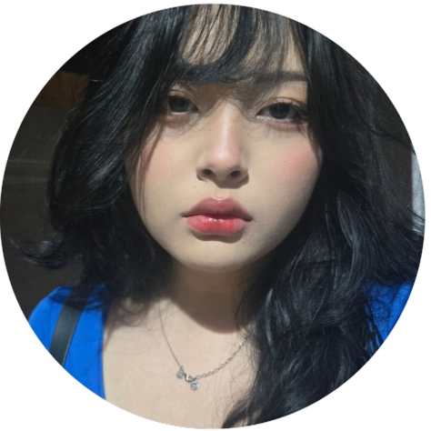
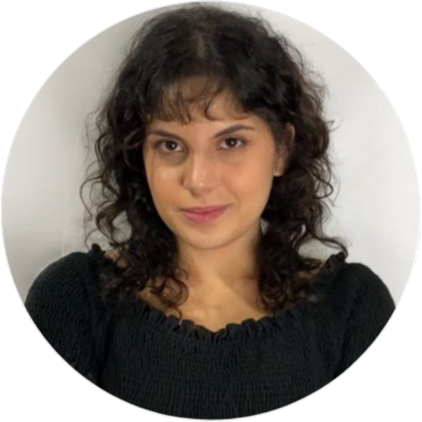
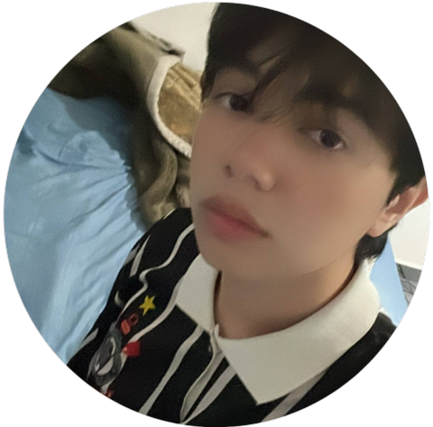
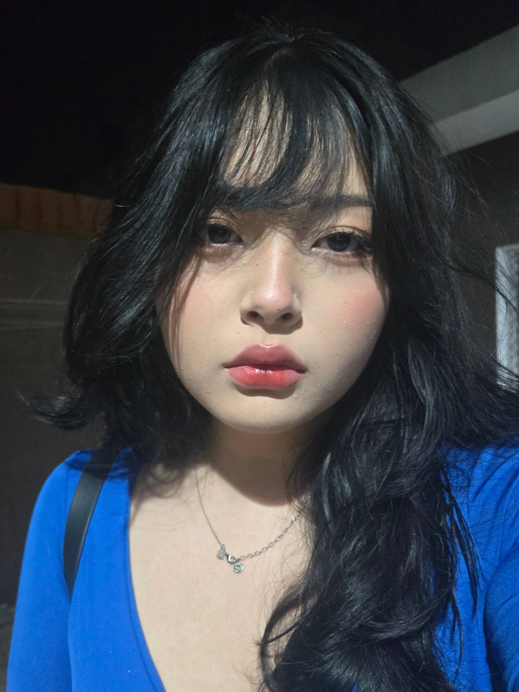
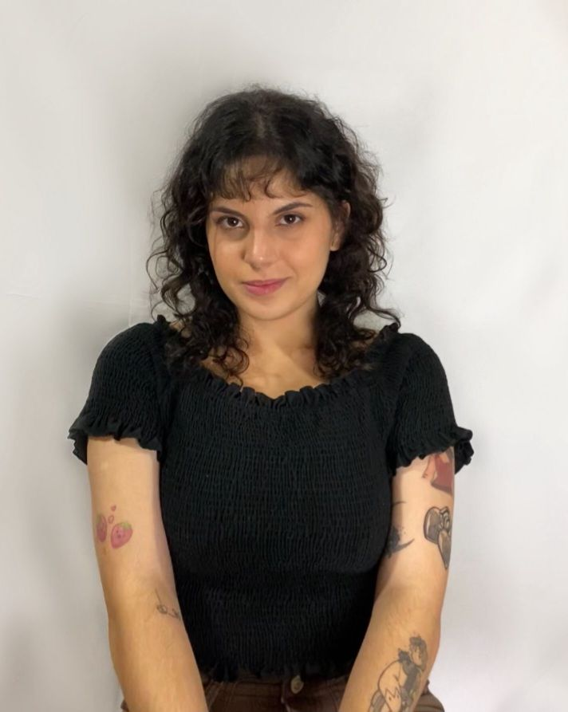
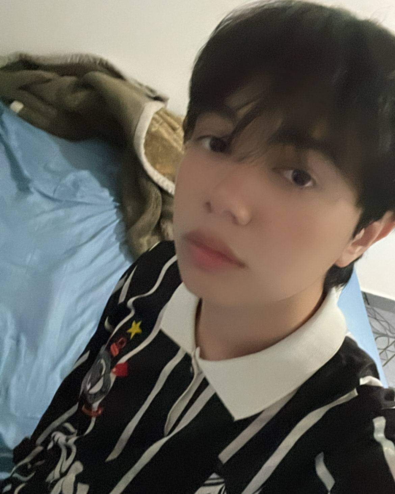

Sobre nós!
Olá! Nós somos os integrantes do ADSOS, o projeto que visa diminuir o absenteísmo nas terapias por teleatendimento.Grupo composto por Amandha Yumi, Erick Takeshi e Giovanna Bardella que são alunos de Análise e Desenvolvimento de Sistemas na FIAP, prontos para enfrentar desafios dentro da programação e resolvê-los em prol da melhoria no teleatendimento do Hospital das Clínicas (HC).Clique em uma de nossas fotos ou role a página para saber mais de cada um de nós!
  Amandha Yumi Toyota Artulino
RM:563549
💻Oi! Eu sou a Amandha Yumi, tenho 19 anos e sou estudante de Análise e Desenvolvimento de Sistemas. Desde que comecei na área de tecnologia, adorei o poder de transformar ideias em soluções reais através do código. Gosto muito de front-end, onde posso unir lógica e criatividade, mas também estou explorando o back-end para entender todo o processo de desenvolvimento.


Giovanna Bardella Gomes
RM:561439
💻Olá! Sou a Giovanna Bardella, uma das integrantes do grupo ADSOS. Tenho 22 anos e sou estudante de Análise e Desenvolvimento de Sistemas na FIAP. Gosto muito de juntar a lógica com a criatividade, a matemática com a arte. Design e ChatBot são os meus favoritos na criação desse projeto.
Erick Takeshi Andrade Nakajune
RM:566059
💻Olá, sou Erick Takeshi, um dos integrantes do grupo ADSOS. Tenho 17 anos sou aluno da fiap e estudo Análise e Desenvolvimento de Sistemas. Adoro juntar a minha criatividade com meus conhecimentos em matemática, Banco de Dados, ia são o que mais tem a minha atenção, mas estar sempre melhorando em programação são os meus principais objetivos